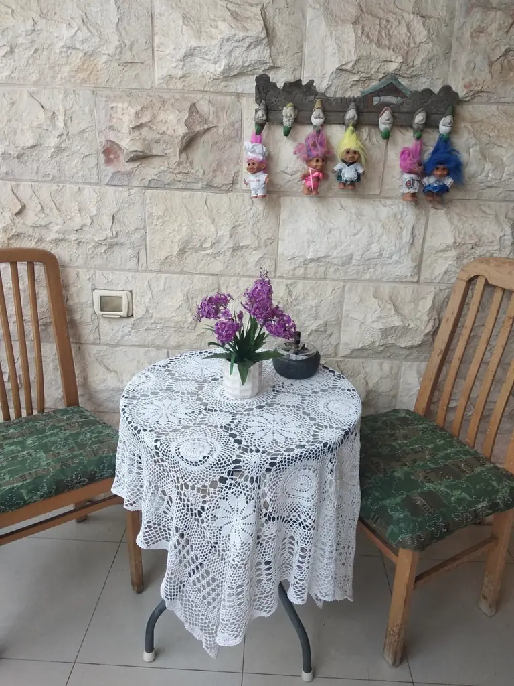
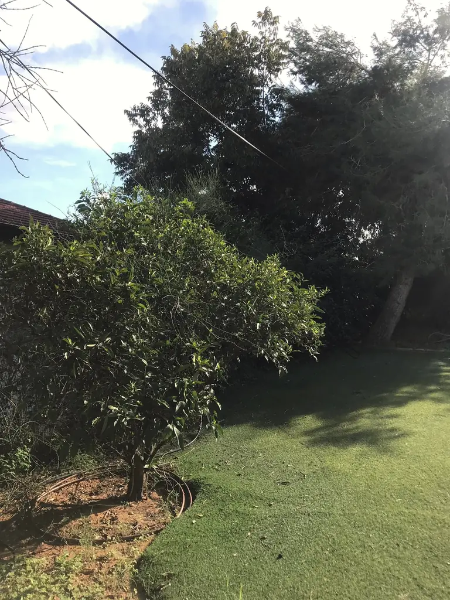
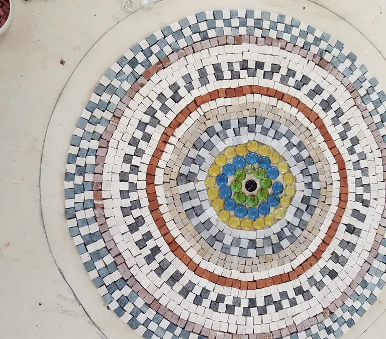

מערכת עיצוב · גרסה 0.1 · אב־טיפוס
„בית לחיים”
חם, מכובד ומלא חיים. נייר חם, דיו כהה, סגול האירוס מהלוגו, וגוונים מעבודות הפסיפס של הדיירים. כל צירוף צבעים לטקסט נבדק מול WCAG ברמה AA (ת״י 5568).
צבעים
צבעי בסיס לטקסט ולרקע; צבעי מותג לפעולות ולהדגשות; צבעים „דקורטיביים בלבד” אינם משמשים לטקסט.
- א
- א
- א
- א
- א
- א
- א
- א
- א
- א
- א
- א
דקורטיביים בלבד (לא לטקסט): --nh-clay-300, --nh-olive-300, --nh-sky-500, --nh-line.
בדיקת ניגודיות
היחס מחושב בדפדפן מתוך משתני ה־CSS עצמם (נוסחת WCAG). סף: 4.5:1 לטקסט רגיל, 3:1 לרכיבי ממשק ומסגרות פוקוס (1.4.11).
| דוגמה | קדמה / רקע | שימוש | יחס | AA |
|---|---|---|---|---|
טיפוגרפיה
כותרות: Frank Ruhl Libre (סריף עברי קלאסי, משתנה 300–900). גוף: Assistant (סנס הומניסטי, משתנה 200–800). שניהם ברישיון SIL OFL 1.1, מתארחים מקומית — בלי Google Fonts CDN. אין נטוי בעברית: הדגשה במשקל ובצבע בלבד.
מרווחים וצורות
בסיס 4px. ריווח מקטעים זורם: --nh-section = clamp(72px, …, 160px). שוליים צדדיים בנייד: 16px.
- 1 · 4
- 2 · 8
- 3 · 12
- 4 · 16
- 5 · 24
- 6 · 32
- 7 · 48
- 8 · 64
- 9 · 96
- 10 · 128
הקשת — מוטיב החלון
תמונות נכנסות למסגרת קשת: חלון, בית, מחסה. .nh-arch (4:5) ו־.nh-arch--34 (3:4).



פסיפס
אריחים בצבעי היצירות של הדיירים — סימן היכר דקורטיבי בלבד (aria-hidden).
רדיוסים: 8 / 16 / 28 / pill. צללים: --nh-shadow-1, --nh-shadow-2.
תנועה
תנועה שקטה, לא ממהרת, שלא מפריעה לקריאה ולגלילה. בלי „חטיפת גלילה”, בלי לולאות אינסופיות. לכל אפקט יש גרסה ל־prefers-reduced-motion ולמתג „הפחתת תנועה” באתר. מפרט מלא: prototype/STORYBOARD.md.
| אסימון | ערך | שימוש |
|---|---|---|
| --nh-dur-1 | 160ms | צבע בריחוף ובפוקוס |
| --nh-dur-2 | 320ms | רכיבי ממשק קטנים, חיצים |
| --nh-dur-3 | 800ms | חשיפת תוכן בגלילה |
| --nh-dur-4 | 1200ms | פתיח, מסכות קשת |
| --nh-ease-out | cubic-bezier(.22,1,.36,1) ≈ power3.out | כניסות |
| --nh-ease-in-out | cubic-bezier(.65,0,.35,1) ≈ power2.inOut | מסכות, מרקר |
רכיבים
לחצו Tab כדי לראות את מצבי הפוקוס. כל רכיב לחיץ גדול מ־44×44px.
פירורי לחם
התראות
תודה! הפנייה התקבלה.
נחזור אליכם בהקדם.
נמצאה שגיאה אחת בטופס:
שאלות נפוצות (אקורדיון)
איך מתחילים?
מתקשרים אלינו או משאירים פרטים בטופס. המחלקה הסוציאלית שלנו תסביר את התהליך ותתאם מפגש היכרות.
אפשר לבקר לפני שמחליטים?
כן. נשמח לארח אתכם ולהראות את המקום.
איך שומרים על קשר עם המשפחה?
ביקורים, ועד הורים פעיל וקשר שוטף עם הצוות.
גלריה + לייטבוקס נגיש
פתיחה ב־Enter, מעבר בחיצים (בעברית: חץ שמאלה = הבא), Esc לסגירה, החלקה בנייד, הפוקוס חוזר לתמונה.
באנר עוגיות
לא חוסם את הדף, לא מכסה פוקוס (scroll-padding), נפתח מחדש מהפוטר. סטטיסטיקה ותוכן מוטמע — רק בהסכמה.
רכיב: טופס מועמדות
הגשת מועמדות
ב־WordPress: שליחה דרך wp_mail() לכתובת שתוגדר בווידג׳ט, הגנת nonce, honeypot, מלכודת זמן והגבלת קצב. בבדיקות — רק לכתובת של אולג. קורות החיים נשלחים כקובץ מצורף ואינם נשמרים בספריית המדיה.
תודה! המועמדות התקבלה.
נעבור על הפרטים ונחזור אליך. (באב־הטיפוס הטופס אינו נשלח.)